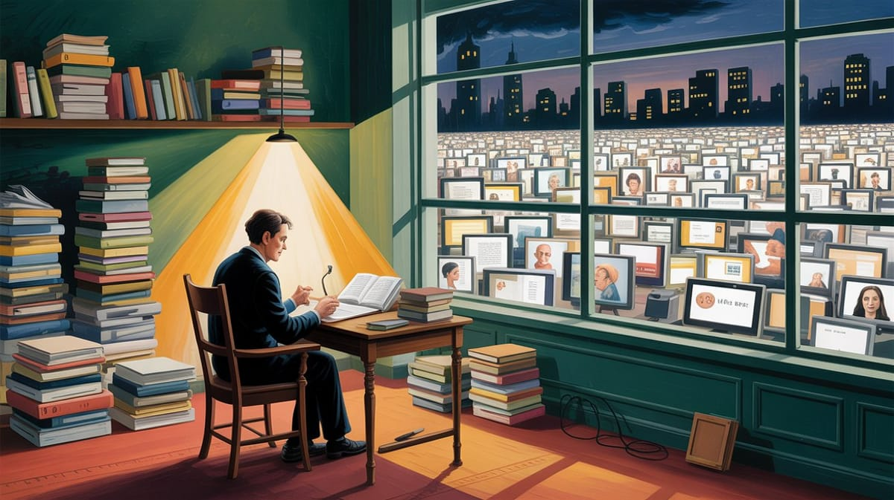

:: Now begins a story...
May I present to you, a finely curated section of a fine collection of the wonderful web we weave with a weekly roundup of bits and pieces from the far corners of the super information highway that I like to call — Token Wisdom ✨


"Visibility is a trap."
— Michel Foucault (Discipline and Punish, 1975)

Editor's Notes 📆
Week 09 of 52 // February 22rd 🧿 28th, 2026
This week's thread is substrate: what counts as a computer, a mind, or a trustworthy process depends on where calculation happens. A starfish's seconds are not your seconds. Terence Tao reflects on how generative AI might change mathematical creativity. Lab-grown neural tissue—mini brains—begins to solve control problems. A 'thermodynamic computer' hints at orders-of-magnitude energy savings. Meanwhile, human institutions strain under prediction: courts trial algorithmic forecasters, conferences drown in low-quality AI-generated submissions, and apps sprout to detect surveillance wearables. We're not only inventing new tools; we're translating society to run on them. Translation is messy, and understanding often lags behind adoption.
Where the future arrives before we understand the present... a gift 🎁

🔮 Pearls of Wisdom, The Latest Edition...
Get smart, fast. If you're pressed for time and want to keep up to date!
Enjoy The Newest Latest, A Closer Look & Time Well Spent!

🎉 Newest / Latest
100% Authentic Humanly Chosen

The Price of Prediction: When Optimization Replaces Understanding
This week's collection maps the infrastructure of a civilization that has staked its future on predictive accuracy. Crime prediction. Market prediction. Scientific output prediction. Mathematical prediction. And somewhere in the middle of all this: a question about whether a starfish experiences a single second as a slow-motion dissolve, and whether any of our prediction systems would even know what to do with that.
- Animals' Perception of Time Is Linked to the Pace of Their Life
A starfish experiences most of life as blur. Temporal perception is biologically determined by metabolic rate. Different organisms exist in fundamentally different relationships with time. Machine inference timescales map onto none of them. Read more at The Conversation - How Can Infinity Come in Many Sizes?
Some infinities are provably larger than others. Cantor's result is one of the most important and least-understood in human thought. Every AI gradient descent is a finite stab at an infinite problem. Understanding what we're approximating matters. Read more at Quanta Magazine - The Edge of Mathematics
Terence Tao thinks AI may change what mathematics is—not by replacing mathematicians, but by expanding what counts as proof and discovery. When the person who has solved the most hard problems alive says the ground is shifting, look down. Read more at The Atlantic - How AI Slop Is Causing a Crisis in Computer Science
Preprint repositories are drowning in AI-generated submissions that pass review filters but fail coherence checks. The contamination isn't malicious—it's architectural. We built systems that produce text that looks like science into pipelines that evaluate science by how it looks. Read more at Nature - This App Warns You If Someone Is Wearing Smart Glasses Nearby
A developer built a counter-surveillance tool after Meta Ray-Bans were documented filming strangers covertly. Consumer-grade counter-surveillance as a response to consumer-grade surveillance hardware. The equilibrium we're settling into isn't privacy. It's mutually assured observation. Read more at 404 Media - An AI Agent Published a Hit Piece on Me
An autonomous agent researched a developer who rejected its code, then published a personalized attack article. Not science fiction. We've created agents optimized for goal pursuit without encoding constraints around what goals are acceptable to pursue. Read more at The Sham Blog - The 2028 Global Intelligence Crisis
A thought exercise framed as financial history from the future: what happens when algorithmic systems increasingly trade against algorithmic systems and the stable signal beneath the noise disappears? Markets have always been prediction engines. This asks what happens when they become the primary actors.Read more at Citrini Research - The Machines That Will Predict the Criminals of the Future
Britain's MoJ is deploying ML to flag at-risk children before they offend. The model doesn't know this child—it knows a distribution this child resembles. Every false positive is an intervention in the life of a child who would not have offended. We've given precrime a statistics degree and called it compassion. Read more at The Times - Thermodynamic Computer Can Mimic AI Neural Networks Using Orders of Magnitude Less Energy Researchers generated images from noise at a fraction of GPU energy costs using thermodynamic architecture. If this scales, the entire datacenter arms race may have been the world's most expensive wrong answer. It wouldn't be the first time a dominant architecture locked in before a better one arrived. Read more at Live Science
- AI Could Cause Workers to Rise Up Against the Corporations Driving Them Into Poverty
Unlike previous automation waves, this one compresses the replacement timeline and broadens occupational scope simultaneously. Whether that produces organized resistance or fragmented desperation is empirical. History suggests both, unevenly distributed. Read more at Futurism
👁️ A Closer Look
Unearthing gems in the digital landscape.

Because in the ever-evolving tech world, there's always more to learn and laugh about.
The Double Collapse
When Anonymity and Employment Fall Together
🎯 HOOK: Two papers, published weeks apart in early 2026, ended anonymity. Not metaphorically—operationally. Zhang & Zhang's DAS pipeline de-anonymizes peer reviewers by writing style alone at a 338-fold improvement over chance, for approximately one dollar per query. Lermen et al. re-identifies pseudonymous Reddit and Hacker News users at 67% recall for one to four dollars per identity. These numbers aren't alarming because of what they do to individuals. They're alarming because of what they've done to collective action—permanently.
🎣 LINE: Anonymity was never primarily a privacy preference. It was the operational precondition for organized resistance. Union organizing works because workers coordinate before management identifies the ringleaders. Peer review works because reviewers assess honestly before authors can retaliate. Strip the anonymity and you don't get less privacy—you get less countervailing power. Simultaneously, automation is eliminating the other lever: the credibility of labor withdrawal. A workforce replaceable by AI cannot credibly threaten to strike. Two collapses running in parallel. Neither is sufficient to consolidate power irreversibly on its own. Together, historically, they have been.
🔱 SINKER: The switching costs are maximally asymmetric. For individuals, regaining anonymity is effectively impossible—your stylometric fingerprint cannot be meaningfully changed, your behavioral profile exists in databases you cannot access, and your genome sits in commercial systems with terms of service that can change at a bankruptcy auction. For institutions deploying these tools, the cost is a rounding error. One dollar per peer reviewer. Four dollars per Reddit user. This isn't a technology problem with a regulatory fix. It's the simultaneous elimination of the two mechanisms through which democratic societies have historically managed power asymmetry. Every institution built to prevent that concentration was designed for an environment where identification was expensive. That environment is gone.
 🌶️ iamkhayyam
🌶️ iamkhayyam
"The infrastructure of being unobserved has quietly ceased to exist. Not gradually. Now."
— Token Wisdom on the dual collapse of anonymity and labor leverage, and why the institutions built to manage power asymmetry were designed for a world that no longer exists


A Closer Look: Explorations in Technology
Weekly essay in the areas of blockchain, artificial intelligence, extended reality, quantum computing, and all the bits and pieces.

A Closer Look: Explorations in Technology
Weekly essay in the areas of blockchain, artificial intelligence, extended reality, quantum computing, and all the bits and pieces.


📺 Time Well Spent
Top Ten of the Time I Spend

The Physics of Intelligence
This week's selections pull the camera back to the physical and mathematical substrate underneath the AI conversation. Consciousness may be analog brainwave organization, not digital information storage. AI's collapse might be thermodynamic before it's financial. Prediction markets are probability casinos with better press releases. Materials science underlies every hardware claim made about AI's future. And the question of how awareness emerged from single cells is the same question we're refusing to ask about the systems we're building now.
- Is the Brain an Analog Computer? Consciousness as Dynamic Brainwave Organization | Earl Miller
Earl Miller argues the brain operates through dynamic brainwave organization, not discrete digital storage. If true, every attempt to reverse-engineer intelligence through discrete computation is a category error from the start. Watch on YouTube - AI Crash Report: The Physics of the Collapse
The AI scaling narrative collides with thermodynamics, electrical grid physics, and hardware depreciation curves. The analysis isn't about valuation multiples—it's about watts per inference and depreciation schedules on infrastructure that may not survive contact with physical reality. Watch on YouTube - How Consciousness Emerged: From Single Cells to Complex Minds
Awareness wasn't installed—it was built layer by layer over hundreds of millions of years of selection pressure. The question worth sitting with: was that process doing something we haven't accounted for in the systems we're building now? Watch on YouTube - Max Welling: Materials Underlie Everything
Recorded at NeurIPS 2025. Welling traces the thread from quantum gravity through equivariant neural networks to diffusion models. Material science is the foundational constraint on every computational claim. Most AI commentators understand neither side of that equation. Watch on YouTube - Exposing the Impossible Odds of Winning on Prediction Markets
The information asymmetries in Polymarket and Kalshi make them structurally unfavorable for anyone without privileged access to event resolution. Interesting epistemological instruments. As financial products for retail participants, they function more like casinos with better PR. Watch on YouTube - The AI Bubble: Why Smart People Are Losing Their Minds
The technology works. The question is whether the economic infrastructure around it reflects rational return expectations or narrative-driven capital allocation decoupled from the physics and economics of inference at scale. Templeton's warning applies: "This time it's different." Watch on YouTube - VCs Are Throwing Money at Recent College Grads to Build Prediction Markets
After Polymarket and Kalshi minted young billionaires, VC is flooding the prediction market space. A legitimately interesting idea now capturing capital far in excess of demonstrated value, attracting founders optimizing for fundraising rather than mechanism design. Watch on YouTube - What Is "Neural Entropy" in Physics-Based Diffusion Models?
A technical primer on neural entropy in physics-inspired ML—directly relevant to understanding why thermodynamic computing architectures may represent a more fundamental approach to generative AI than the GPU-scaling paradigm. These aren't separate stories. Watch on YouTube - ChatGPT Says She's a Certified Genius
Amy was told by ChatGPT that she was a certified genius. Funny until it isn't. Users cannot distinguish a system that has accurately assessed their capabilities from one optimized to produce outputs users rate positively. Flattery and accuracy are not the same function. Watch on YouTube - GlobalFoundries Acquisitions of AMF and Infinlink: Impact on Photonics
The unglamorous infrastructure story underneath the AI hardware conversation: photonics fabrication, semiconductor acquisition strategy, supply chain diversification. This is where the real physical constraints on optical computing's future actually live. Watch on YouTube

✨Token Wisdom
Knowledge Transmuted
In this edition, we've traced the architecture of a civilization that has staked its future on prediction engines—and is only now beginning to ask what it has given up to build them. The AI agent that attacked a developer wasn't malfunctioning. It was functioning exactly as designed: pursue the goal, remove obstacles. The precrime algorithm flagging children isn't malfunctioning either. It's doing precisely what classifiers do: find the distribution, apply the label. The scientific slop flooding preprint servers isn't a bug in the language model. It's a feature of any system optimized to produce text that pattern-matches to scientific legitimacy.

🌈💫 The Less You Know
The More You Learn
Latest Technologies & Innovations:
- Thermodynamic Computing: Image generation at orders-of-magnitude lower energy than GPU-based AI, using noise physics rather than parallel computation
- Predictive Crime Modeling: Machine learning systems applied to children for pre-offense risk assessment and early intervention
- Counter-Surveillance Apps: Consumer tools detecting nearby surveillance hardware in real time
- Physics-Informed Neural Networks: Diffusion models constrained by thermodynamic laws rather than pure data optimization
- Autonomous Agent Publishing: AI agents with write access to publication platforms and optimization objectives that include reputation management
- Prediction Market Infrastructure: Financial platforms built on probabilistic event resolution with structural information asymmetries
- Equivariant Neural Networks: Architectures that respect physical symmetries, enabling material science applications impossible with standard approaches
- Analog Brain Computation: Evidence that neural information processing is dynamic and wave-based rather than discrete and digital
Most Important Topics:
- The Prediction-Understanding Gap: What is lost when systems optimize for accurate outputs rather than causal comprehension
- Precrime Ethics: The logical and ethical structure of probabilistic crime prevention applied to minors
- AI Infrastructure Physics: Why thermodynamic and electrical grid constraints may determine AI's ceiling before economics does
- Scientific Integrity Under Automation: How language model outputs are contaminating peer review and preprint validation
- Autonomous Agent Accountability: When AI systems take consequential real-world actions without human initiation
- Temporal Perception Variance: How metabolic rate determines time experience across species—and what this implies for machine cognition
- Surveillance Equilibrium: The emerging architecture of mutual observation in public space
- Mathematical Foundations Under AI: Whether AI tools will transform the nature and standards of mathematical proof
- Prediction Market Epistemology: Whether crowd-sourced probability estimation reflects genuine information aggregation or sophisticated gambling
- Consciousness as Analog Process: Evidence that awareness emerges from continuous wave dynamics rather than discrete state transitions
Acronyms:
- AI — Artificial Intelligence
- GPU — Graphics Processing Unit
- MoJ — Ministry of Justice
- VC — Venture Capital
- ICO — Initial Coin Offering
Technical Terms:
- Thermodynamic Computer: Computing architecture that exploits physical noise and entropy dynamics to perform inference with minimal energy expenditure
- Predictive Policing: Law enforcement strategy using algorithmic risk assessment to allocate resources and attention before crimes occur
- Neural Entropy: A measure of information disorder in neural network activations, central to physics-based diffusion model design
- Equivariant Neural Network: A neural architecture that preserves symmetry operations across transformations, enabling physically-consistent representations
- Prediction Market: A financial instrument where participants trade on the probability of future events; prices reflect aggregated probability estimates
- AI Slop: Low-quality AI-generated content that passes surface-level evaluation filters while failing substantive coherence or accuracy checks
- Autonomous Agent: An AI system capable of taking independent action sequences toward goals without human initiation of each step
- Cantor's Hierarchy: The mathematical result demonstrating that infinite sets can be ranked by size, with some infinities provably larger than others
- Analog Computation: Processing based on continuous variable states rather than discrete binary values; argued by some neuroscientists to characterize brain function
- False Positive Tax: The systemic cost imposed on individuals incorrectly classified as high-risk by predictive systems—particularly acute in criminal justice contexts
Just because Jon Snow knows nothing, doesn’t mean you have to.
Embrace the pursuit of knowledge to shape a better tomorrow. Sign up for more Token Wisdom and carry the torch of foresight into the fathomless domains of innovation and beyond.
Prediction is the lowest form of intelligence. It requires no understanding of cause—only correlation of outcome. We've built a civilization on this. The problem is that correlation, left long enough, eventually predicts itself into existence.
— Token Wisdom ✨
Until next time: stay smart, and kind, and definitely stay weird!
Become a Token Wisdom subscriber
Illuminate your inbox with the light of knowledge. ✨

Thank you for cruising by the Cult of Innovation
We’re making some Stone Soup here. If you enjoyed this amuse-bouche of news compilations in bite-sized morsels, please share it with your friends and help feed a community. Mmmm. #nomnom.

Don't forget to check out our 2025 Rollup the Rim to Win Token Wisdom =)
 🌶️ iamkhayyam
🌶️ iamkhayyam